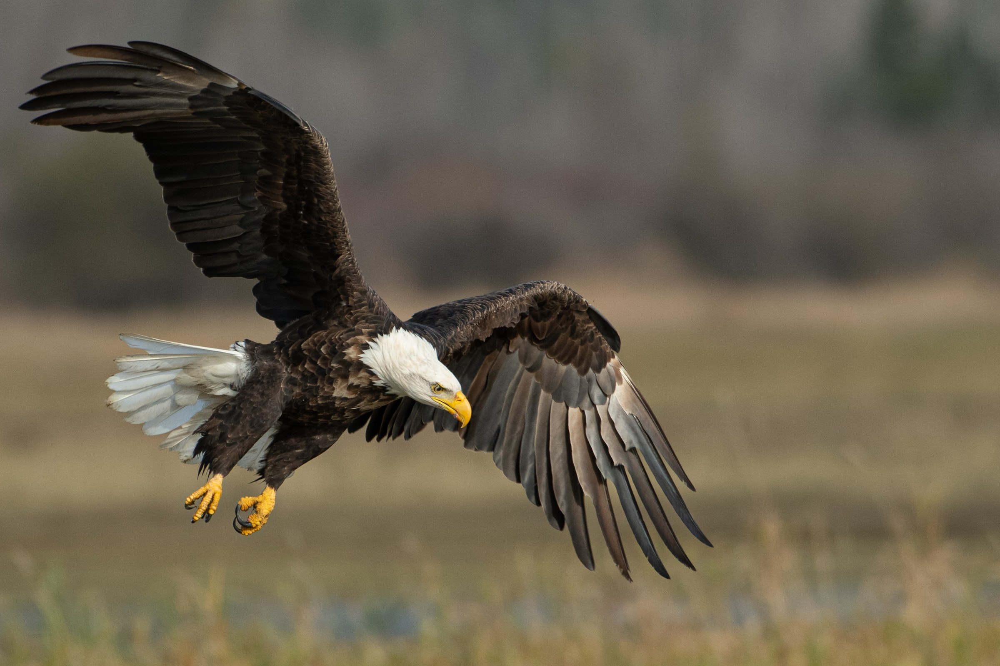

Amazing Article
Ozan TaşcıEagles are generally larger and stronger than other flying predators, and their head structure is larger. Like other birds of prey, they have a curved beak, muscular legs and powerful claws. Their crooked beak structure helps to rip out the meat of their prey, while thanks to their muscular legs and lockable claws, they can fly even heavier prey than themselves. The eyesight of eagles is very developed. When gliding at high altitudes, they can scan the ground and detect their prey without making it felt. The fact that the pupils are very large compared to the skulls is the key to improved eyesight. In addition, eagles fly much higher than other birds.
My Eagle
They build their nests on high cliffs and the tops of tall trees. The incubation period of one or several eggs laid in the nest lasts six to eight weeks. The larger of the hatchlings from the brood usually kills other offspring. The mother and father do not intervene to stop the death. The cub develops slowly, but eagles that reach the age of three to four have adult feathers removed. Rock eagles have a wingspan of approximately 3 meters.